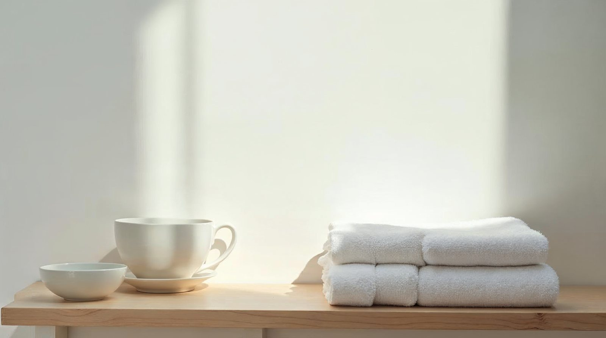
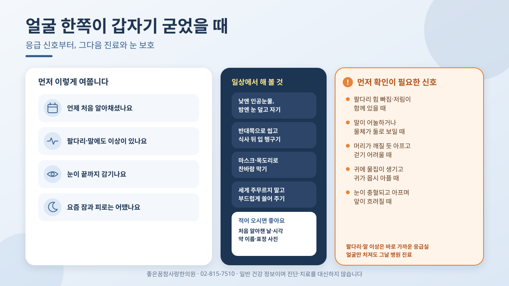

이종호 한의사 감수좋은꿈참사랑한의원 대표원장 (한의사 면허번호 19769)발행 2026-11-26 · 수정 2026-11-27
이 글의 차례
아침 7시, 출근 준비로 바쁜 욕실이에요. 양치를 마치고 물을 머금어 헹구는데, 물이 오른쪽 입가로 주르륵 새어 세면대로 떨어집니다. 이상하다 싶어 거울을 들여다보죠. 웃어 보니 왼쪽 입꼬리만 올라가고, 눈을 꼭 감으려 해도 오른쪽 눈은 흰자가 살짝 보인 채 다 감기지 않아요. 생각해 보니 어제저녁부터 오른쪽 귀 뒤가 묵직했습니다.
연말 마감에 송년회까지 겹쳐 몇 주째 잠이 모자랐고, 어젯밤엔 언덕 위 마을버스 정류장에서 찬바람을 맞으며 한참을 기다렸고요. 순간 가슴이 철렁합니다. 혹시 중풍이 온 걸까.
진료실에서 이런 말씀을 자주 들어요. "원장님, 거울 보고 너무 놀라서 손이 덜덜 떨렸어요." "얼굴이 이러니 사람을 못 만나겠어요." 얼굴은 하루에도 수십 번 남과 마주하는 자리라, 한쪽이 굳으면 몸보다 마음이 먼저 무너지거든요. 웃음이 어색해지고, 밥을 먹다 흘리고, 말할 때 발음이 새는 일이 한꺼번에 찾아오니 얼마나 당황스러우셨을까 싶어요.
놀라시는 게 당연해요.
그러니까 사실은 두 가지를 먼저 나눠야 해요. '얼굴만 굳은 것'과 '얼굴과 함께 다른 곳에도 이상이 온 것'은 완전히 다른 얘기거든요. 그래서 제가 가장 먼저 부탁드리는 것도 두 가지예요.
하나는 얼굴 말고 다른 곳에도 이상이 있는지 확인하는 일이에요. 한쪽 팔다리에 힘이 빠지거나 저리고, 말이 어눌해지고, 물체가 둘로 보이거나, 머리가 깨질 듯 아프거나 어지러워 똑바로 걷기 어렵다면 뇌혈관 문제일 수 있으니 지체하지 말고 가까운 응급실로 가셔야 해요.
다른 하나는 얼굴만 처진 경우라도 며칠씩 지켜보지 말고 그날이나 늦어도 다음 날 병원 진료를 받는 일이에요. 얼굴신경마비는 이른 시기에 약 치료가 필요한지 판단받는 게 권고되는 병이거든요. 그 확인을 거친 뒤라면, 눈을 보호하고 몸을 쉬게 하면서 한의원 진료를 함께 상의하실 수 있어요.
왜 얼굴 한쪽이 갑자기 굳을까요
얼굴 표정을 만드는 근육은 얼굴신경이 움직입니다. 이 신경은 뇌에서 나와 귀 뒤쪽 뼈 속의 가늘고 좁은 통로를 지난 뒤, 귀 아래에서 부채처럼 갈라져 이마와 눈, 볼, 입 주변 근육으로 퍼집니다. 그런데 이 신경이 어떤 이유로 붓거나 염증이 생기면 좁은 뼈 통로 안에서 눌려 신호가 제대로 전해지지 않습니다. 그러면 한쪽 얼굴 근육이 한꺼번에 힘을 잃지요.
원인을 하나로 짚기 어려운 이런 경우를 흔히 벨 마비, 또는 특발성 안면신경마비라고 부르고, 몸속에 숨어 있던 바이러스가 피로나 감기 끝에 다시 활동하면서 생긴다는 설명이 많습니다.
얼굴신경은 표정만 맡고 있지 않습니다. 혀 앞쪽의 맛을 느끼는 길, 눈물과 침이 나오는 길, 큰 소리가 귀에 너무 울리지 않게 조절하는 작은 근육도 이 신경과 이어져 있습니다. 그래서 얼굴이 굳기 하루 이틀 전부터 귀 뒤가 아프거나, 음식 맛이 한쪽만 이상하거나, 전화벨 소리가 유난히 크게 울린다고 말씀하시는 분이 많습니다.
벨 마비는 대개 이마까지 한쪽이 함께 약해집니다. 눈썹을 올려 보면 아픈 쪽 이마에는 주름이 잘 잡히지 않고, 눈도 끝까지 감기지 않습니다. 뇌졸중 때문에 얼굴이 처질 때는 이마는 비교적 움직이고 입 주변이 주로 처지면서 팔다리나 말에도 문제가 함께 오는 경우가 많다고 알려져 있습니다. 하지만 이 구분은 참고일 뿐입니다.
예외도 있고, 놀란 상태에서 스스로 판단하기는 어렵습니다. 그래서 저는 늘 판단은 진료실과 응급실에 맡기시라고 말씀드립니다.
하나 더 기억해 두실 것이 있습니다. 귀 안이나 귓바퀴에 작은 물집이 잡히면서 귀가 몹시 아프고, 소리가 잘 안 들리거나 어지러움이 함께 온다면 대상포진 바이러스가 얼굴신경을 건드린 경우일 수 있습니다. 이때는 항바이러스제를 서둘러 쓰는 것이 권고되므로 더 지체하지 마셔야 합니다.
찬바람만으로 안면마비가 생긴다고 단정할 수는 없습니다. 그래도 제 진료실에서는 찬바람이 불기 시작하는 무렵, 연말처럼 잠이 모자라고 무리가 겹치는 때, 감기를 앓고 기운이 떨어진 뒤에 이런 분들을 뵙곤 합니다. 당뇨가 있는 분, 임신 막달이나 출산 직후인 분에게 더 자주 생긴다고도 알려져 있습니다.

이런 분들을 자주 뵙습니다
이런 분들이 많습니다. 연말 마감과 송년회가 이어지며 몇 주째 새벽에 잠드는 직장인입니다. 귀 뒤가 뻐근했지만 피곤해서 그러려니 넘겼고, 다음 날 아침 양치 물이 새는 걸 보고서야 놀라 오십니다. 이런 분께는 우선 병원 진료를 받으셨는지 여쭙고, 그다음 남은 연말 일정을 같이 줄여 보자고 말씀드립니다.
얼굴신경이 회복할 시간을 몸이 내어 주어야 하기 때문입니다.
노량진에서 시험을 준비하는 수험생도 뵙습니다. 외풍 드는 방 창가 책상에 엎드려 잠드는 날이 이어진 뒤 얼굴이 굳었다며 오시는 경우입니다. 시험이 코앞이라 병원 가는 시간조차 아깝다고 하시지요. 저는 이 증상만큼은 공부보다 진료를 먼저 받으시라고 말씀드립니다. 약 치료를 시작할지 정하는 시기가 처음 며칠에 몰려 있기 때문입니다.
감기 끝에 기운이 없던 어르신을 가족이 모시고 오시기도 합니다. 식사하시다 한쪽 입가로 국물을 흘리시는 걸 자녀가 먼저 알아챈 경우입니다. 어르신은 혈압약이나 당뇨약을 드시는 경우가 많아, 얼굴만의 문제인지 뇌혈관 문제인지 병원에서 먼저 확인하시도록 안내하고, 그 뒤에 몸을 어떻게 돌볼지 함께 이야기합니다.
출산을 앞두었거나 갓 출산한 분도 계십니다. 이때는 드실 수 있는 약과 받을 수 있는 치료가 달라지므로 산부인과와 신경과의 의견을 먼저 들으시고, 한의원 진료는 그 범위 안에서 조심스럽게 상의합니다.
처음 며칠, 그리고 회복하는 동안 해 볼 것
가장 먼저 챙기셔야 할 것은 눈입니다. 눈꺼풀이 끝까지 닫히지 않으면 눈 표면이 마르고, 자는 동안 눈이 살짝 열린 채로 있으면 각막에 상처가 나기 쉽습니다. 낮에는 인공눈물을 자주 넣고, 밤에는 처방받은 안연고를 바른 뒤 눈을 감긴 상태로 의료용 종이테이프나 안대로 덮어 두는 방법을 많이 씁니다.
붙이는 방법은 진료받은 곳에서 한 번 안내를 받아 두시면 좋습니다. 바깥에 나갈 때는 찬바람과 먼지를 막아 주는 안경을 쓰세요. 눈이 빨개지거나 아프고 앞이 뿌옇게 보이면 미루지 말고 안과 진료를 받으셔야 합니다.
식사도 조금 달라져야 합니다. 굳은 쪽 볼 안쪽으로 음식이 자꾸 고이니, 반대쪽으로 천천히 씹고 식사 뒤에는 물로 입을 헹궈 볼 안에 남은 것이 없는지 확인합니다. 입술이 잘 다물어지지 않아 국물이 흐르기 쉬우니 작은 숟가락이나 빨대를 쓰면 한결 편합니다. 뜨거운 국물을 급하게 드시다 입술 안쪽을 데는 일도 있으니 조금 식혀서 드세요.
얼굴은 따뜻하게, 그러나 덥지 않게 지킵니다. 외출할 때는 마스크와 목도리로 찬바람이 얼굴과 귀 뒤에 직접 닿지 않게 하고, 세수는 미지근한 물로 합니다. 따뜻한 수건을 10분 남짓 얹어 두는 정도는 편안하게 느끼시는 분이 많습니다. 다만 온풍기 바람을 얼굴에 바로 쐬거나 전기장판에 얼굴을 대고 자는 것은 피하세요.
처음 며칠은 굳은 얼굴을 세게 주무르거나 억지로 크게 찡그리지 않습니다. 손바닥으로 턱에서 귀 쪽으로, 입가에서 광대 쪽으로 부드럽게 쓸어 올리는 정도면 충분합니다. 움직임이 조금씩 돌아오기 시작하면 거울 앞에서 양쪽을 맞추어 천천히 연습합니다.
눈썹을 살짝 올리기, 눈을 지그시 감기, 입술을 모았다가 '이' 하고 벌리기를 한 번에 몇 번씩, 하루 두세 차례 정도로 시작해 보세요. 힘껏 오래 하는 연습은 권하지 않습니다. 언제부터 얼마나 할지는 진료받는 곳과 상의하시면 됩니다.
무엇보다 쉬셔야 합니다. 남은 송년회는 미루고, 야근이 이어진다면 며칠만이라도 일을 덜어 달라고 말씀해 보세요. 평소보다 한 시간 일찍 눕고, 술은 회복하는 동안 쉬는 편이 좋습니다.
병원에서 스테로이드 약을 처방받았다면 정해진 날짜와 양을 지켜 드시고, 그사이 혈당이 오르거나 속이 쓰리거나 잠이 얕아질 수 있으니 이런 변화가 있으면 처방한 의사에게 알리세요. 당뇨가 있는 분은 이 기간에 혈당을 평소보다 자주 재 보시는 것이 안전합니다.
거울 앞에서 마음이 무너질 때
얼굴이 굳고 나면 많은 분이 하루에도 몇 번씩 거울을 들여다보십니다. 어제보다 조금 움직이나, 혹시 더 처졌나. 그런데 신경이 회복되는 속도는 하루 단위로 눈에 보일 만큼 빠르지 않아서, 매일 들여다볼수록 마음만 더 지칩니다. 저는 일주일에 한 번, 같은 시각 같은 조명에서 눈썹 올리기와 눈 감기, 웃기 세 가지 표정을 사진으로 남겨 두시라고 권합니다.
몇 주 모아 보면 눈으로는 몰랐던 변화가 보이기도 하고, 진료실에서 이야기를 나눌 때도 큰 도움이 됩니다.
회복은 사람마다 다릅니다. 많은 경우 두세 주 무렵부터 움직임이 조금씩 돌아오기 시작하고 몇 달에 걸쳐 회복되어 간다고 알려져 있지만, 더 오래 걸리는 분도 있고 흔적이 조금 남는 분도 있습니다. 그러니 남과 비교하지 마시고 지난주의 나와만 비교해 주세요.
사람을 만나는 일이 부담스러우면 마스크를 쓰셔도 괜찮고, 가까운 동료에게는 지금 이런 상태라고 먼저 말해 두는 편이 마음이 덜 쓰입니다. 그래도 마음이 자꾸 가라앉고 혼자 견디기 어렵다면, 그 마음도 진료실에서 꼭 말씀해 주세요.
얼마나 지켜보고, 언제 진료를 받을까요
안면마비는 지켜보면서 기다리는 증상이 아닙니다. 처음 알아챈 날, 늦어도 다음 날에는 병원 진료를 받아 원인을 확인하고 약 치료가 필요한지 판단받으세요. 진료를 받은 뒤에는 앞에서 말씀드린 것처럼 눈을 지키고 쉬면서 회복의 흐름을 지켜봅니다.
두세 주가 지나도 움직임이 돌아오는 기미가 전혀 없거나, 몇 달이 지나도 눈이 잘 감기지 않는다면 담당 의사와 다시 상의하셔야 합니다.
다음과 같은 경우에는 기다리지 말고 먼저 해당 진료를 받으세요.
- 얼굴이 처지면서 한쪽 팔이나 다리에 힘이 빠지거나 저린 경우
- 말이 어눌해지거나, 물체가 둘로 보이거나, 한쪽이 잘 보이지 않는 경우
- 갑자기 머리가 깨질 듯 아프거나, 어지러워 똑바로 걷기 어려운 경우
- 귀 안이나 귓바퀴에 물집이 생기고 귀가 몹시 아프거나, 소리가 잘 들리지 않는 경우
- 얼굴 양쪽이 함께 약해지거나, 몇 주에 걸쳐 조금씩 더 처지는 경우
- 눈이 빨갛게 충혈되고 아프거나, 앞이 뿌옇게 흐려지는 경우
팔다리 힘 빠짐이나 말이 어눌한 증상이 함께 있다면 증상이 시작된 시각을 기억해 두고 지체하지 말고 가까운 응급실로 가세요. 처방받은 약은 의사와 상의 없이 줄이거나 끊지 않습니다. 얼굴 때문에 마음이 많이 힘들 때는 ☎ 109로 바로 전화해 이야기를 나눌 수 있습니다.
좋은꿈참사랑한의원에 처음 오시면
처음 오시면 저는 얼굴이 굳은 것을 언제 처음 아셨는지부터 여쭙습니다. 그 전 며칠 동안 귀 뒤가 아팠는지, 감기 기운이 있었는지, 잠은 몇 시간쯤 주무셨는지, 맛이나 소리가 다르게 느껴졌는지도 차례로 여쭙습니다. 병원에서 어떤 설명을 들으셨는지, 처방받은 약의 이름과 드신 기간, 혈압이나 당뇨처럼 원래 있던 병도 함께 확인합니다.
그다음 양손의 맥을 짚습니다. 맥을 짚는 동안 몸이 찬 편인지, 손발은 어떤지, 식사와 소화, 대소변은 편한지 여쭙고, 필요하면 혀를 봅니다. 이어서 이마에 주름을 잡아 보기, 눈을 꼭 감기, 볼에 바람을 넣어 보기, 입꼬리를 올려 보기를 차례로 부탁드려 어느 근육이 얼마나 움직이는지 살피고, 귀 뒤를 눌렀을 때 아픈지도 확인합니다.
그렇게 들은 이야기와 살핀 것을 모아, 병원 치료와 함께 할 수 있는 침과 한약 상담을 지금 상태에 맞게 정합니다. 한약은 드시고 있는 약을 확인한 뒤 신중하게 정하고, 필요하면 원내 탕전실에서 제가 직접 검수한 약재로 달입니다. 비용이나 건강보험 적용, 방문 간격은 방문 전 전화로 확인해 주세요.
진료실을 나서기 전에는 집에서 눈을 지키는 방법과 얼굴을 부드럽게 쓸어 주는 방법을 한 번 더 말씀드리고, 다시 오시면 지난번에 비해 눈 감기와 입 다물기가 어떻게 달라졌는지, 밤잠은 어땠는지부터 이어서 여쭙습니다.
오실 때 얼굴이 굳은 것을 처음 알아챈 날짜와 대략의 시각, 그 전 며칠 동안 있었던 일, 병원에서 받은 진단명과 약 이름, 일주일 간격으로 찍은 표정 사진을 가져오시면 이야기가 훨씬 빨라집니다. 기억나는 만큼만 적으셔도 괜찮습니다.
마치며
거울 속에서 낯선 내 얼굴을 마주한 아침은 오래 기억에 남아요. 놀라고 겁나는 게 당연하죠. 그래도 오늘 하실 일은 생각보다 단순해요. 다른 위험한 신호가 없는지 확인하고, 미루지 말고 병원 진료를 받고, 눈을 지키고, 일찍 주무시는 것. 나머지는 몸이 회복할 시간을 내어 주면서 하나씩 같이 살펴 가면 돼요.
얼굴과 몸의 리듬을 살피는 건 제가 맡을게요. 대신 하나만 부탁드려요. 이번 몇 주만큼은 잠을 무엇보다 앞에 두세요. 연말 약속도, 마감도 잠보다 먼저 오지 않게요. 잠이 보약이에요. 딴 건 편하게 하셔도 돼요.
다음에 저를 만나시면, 그사이 눈이 얼마나 감기게 되었는지, 밤에 몇 시간이나 주무셨는지부터 여쭐게요. 궁금한 건 그냥 편하게 물어보세요.
함께 읽으면 좋은 글
- 찬바람을 오래 맞고 들어온 뒤 귀가 아프고 귀 뒤가 당길 때는 무엇을 먼저 살피나요?
- 얼굴 한쪽이 저리거나 감각이 둔한 느낌이 있을 때는 무엇부터 확인하나요?
- 찬바람을 맞은 뒤 얼굴과 턱이 뻣뻣해지는 느낌은 어떻게 살피나요?

왜 얼굴 한쪽이 갑자기 굳을까요
- 얼굴 표정을 만드는 근육은 얼굴신경이 움직입니다.
- 이 신경은 뇌에서 나와 귀 뒤쪽 뼈 속의 가늘고 좁은 통로를 지난 뒤, 귀 아래에서…
이런 분들을 자주 뵙습니다
- 이런 분들이 많습니다.
- 연말 마감과 송년회가 이어지며 몇 주째 새벽에 잠드는 직장인입니다.
처음 며칠, 그리고 회복하는 동안 해 볼 것
- 가장 먼저 챙기셔야 할 것은 눈입니다.
- 눈꺼풀이 끝까지 닫히지 않으면 눈 표면이 마르고, 자는 동안 눈이 살짝 열린 채로…
거울 앞에서 마음이 무너질 때
- 얼굴이 굳고 나면 많은 분이 하루에도 몇 번씩 거울을 들여다보십니다.
- 어제보다 조금 움직이나, 혹시 더 처졌나.
자주 묻는 질문
얼굴 한쪽이 처지면 모두 중풍(뇌졸중)인가요?
얼굴만 갑자기 굳는 경우에는 얼굴신경 자체의 문제인 벨 마비가 많지만, 스스로 구분하기는 어렵습니다. 팔다리 힘 빠짐이나 말이 어눌한 증상이 함께 있으면 바로 가까운 응급실로 가시고, 얼굴만 처졌더라도 그날이나 다음 날 병원 진료를 먼저 받으세요.
병원 약을 먹는 중에 한의원 진료를 받아도 되나요?
병원 치료와 함께 한의원 진료를 상의하는 분들이 많습니다. 진단명과 드시는 약을 알려 주시면 그에 맞춰 침 치료를 살피고, 한약은 복용 중인 약을 확인한 뒤 신중하게 정합니다.
바깥에 나가 찬바람을 쐬어도 괜찮을까요?
외출을 아예 피할 필요는 없지만, 마스크와 목도리로 찬바람이 얼굴과 귀 뒤에 직접 닿지 않게 하고 덜 감기는 눈은 안경으로 보호하세요. 피로가 쌓이지 않도록 일정을 줄이는 편이 좋습니다.
얼굴을 세게 마사지하면 더 빨리 돌아오나요?
세게 주무르거나 억지로 크게 움직이는 것은 권하지 않습니다. 처음에는 손바닥으로 부드럽게 쓸어 주는 정도로 하고, 움직임이 돌아오기 시작하면 거울을 보며 양쪽을 맞추는 가벼운 연습을 진료받는 곳과 상의해 이어 가세요.
회복까지는 얼마나 걸리나요?
사람마다 다릅니다. 많은 경우 두세 주 무렵부터 움직임이 조금씩 돌아오기 시작해 몇 달에 걸쳐 회복되어 간다고 알려져 있지만, 더 오래 걸리기도 합니다. 두세 주가 지나도 기미가 없거나 눈이 계속 잘 감기지 않으면 담당 의사와 다시 상의하세요.
좋은꿈참사랑한의원은 재진 때 지난번 이야기부터 이어서 여쭙니다. 진료시간과 예약은 오시는 길에서 확인하세요.
어디서 상담받을 수 있나요?
좋은꿈참사랑한의원은 서울 동작구 만양로2길 2 신성빌딩 3층·5층(서울 동작구 상도동, 7호선 상도역 3번 출구 근처)에 있습니다. 한의사 3명(이종호 대표원장, 조영기 수석진료원장, 정원영 진료원장)이 진료합니다. 진료시간은 평일 09:30~20:00(점심 13:00~14:00), 토·일·공휴일 09:30~15:00이며, 방문 전 전화로 확인을 권합니다. 예약은 네이버 예약, 카카오톡 상담, 전화 02-815-7510로 받습니다.
이 글은 일반적인 건강 정보이며 개인의 진단이나 치료를 대신하지 않습니다. 증상이 있거나 복용 중인 약이 있다면 진료를 통해 확인하세요. 치료 효과는 개인마다 다를 수 있습니다.
작성 기준: 일반적으로 알려져 있는 건강 정보를 참고해 정리했습니다(대표원장 감수). 증상 기록은 1~2주 동안 하루 1회, 비슷한 시간에 적어 오시면 지난 상태와 비교하기 쉽습니다.